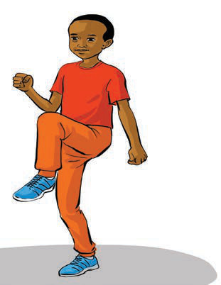
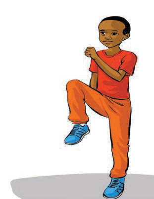

Namna ya kufanya zoezi la kunyanyua magoti juu:
(i)Kimbia huku ukiinua magoti juu, kama inavyoonekana katika Kielelezo namba 2.
(ii)Fanya zoezi hili kwa sekunde 30 hadi 60 mara 3.


Kielelezo namba 2:Kufanya zoezi la kunyanyua magoti juu